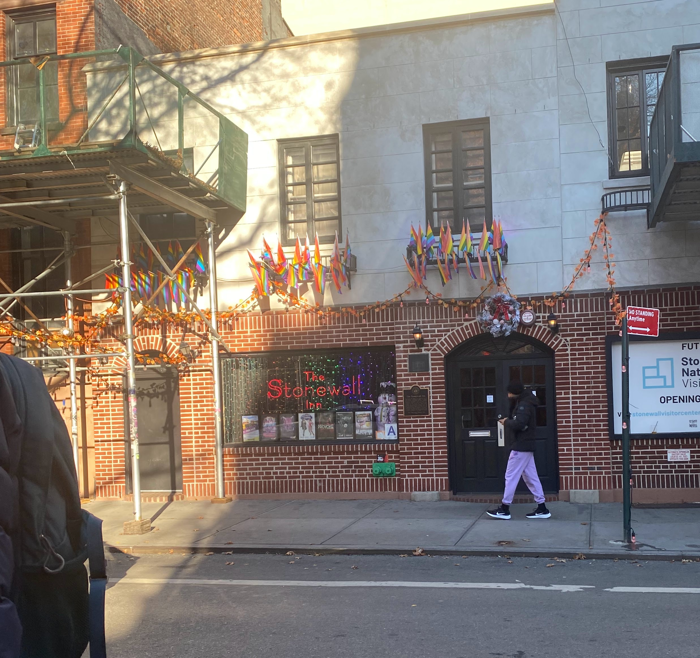

Background: Stonewall & 1970s Gay Liberation
Before Stonewall: A Brief recounting of American Queer History
It is important to mention and always remember that queer history within the United States did not start with Stonewall, nor did queer political history start with the Stonewall riots in 1969. Many past historians have worked tirelessly to reveal queer history within the United States. The first queer history scholars presented research to help the early history of LGBT communities and political activism come to light (though there are many other newer scholars who add to their narratives and include new locations, groups, and time periods since the field is still relatively new and there are always new angles and communities that deserve historical analysis!).
Chauncey, an early scholar, focuses on the 1890s to 1940s in New York City and he worked to document a proto-queer community in primarily the middle to working class. During this early period of queer history labels that we know today such as gay, lesbian, and homosexual were not commonly used or were used as derogatory slang/a medical diagnosis. Identity (both sexual and gender-based) in this period as identified by scholars was much more flexible than many people imagine it to be today. Many men who frequented nightlife areas of New York City and sought out the company of other men often did not classify themselves as being attracted only to men.1 These men were considered to be “wolves” as they typically were married and appeared as strong and manly men who sought out more feminine men called “fairies” to perform sexual acts with in clubs and on the streets of the city at night.2 These men were still seen as dominant because they took the masculine role during sex, meaning they were the penetrator. Meanwhile, the fairies were viewed as feminine in the eyes of the general working class public because they were the ones being penetrated much like a woman. Some fairies even dressed in drag and therefore presented as women during their time on the streets. Only after WWII did the enforcement of a firmer binary based on sex enter into the middle and working class consciousness due to the increasing medicalization of sexuality and the increased focus on sexual deviancy by the government and society as a whole.3 Since the beginning of Prohibition and even more so with the medicalization of homosexuality in the post war period gay and non-heterosexual identities began to retreat from the public eye. Laws and regulatory vice squads increased fear and risk of engaging in homosexual activity or inviting homosexual clientele into public establishments, especially nightlife locations such as bars, cabarets, and late night restaurants where these men typically would meet to socialize. Scholars therefore determine that the closet that in modern culture is a very common concept was created during the transition after WWII to a more binary and medicalized idea of sexuality and identity.4 These outside factors hid the queer community from outside eyes up until Stonewall because the community that was once very prominent in New York City was forced underground starting in the 1920s until the 1960s.
Other scholars focus on areas outside of New York City and on more recent periods where the closet existed and the government and medical science was creating the modern construction of queer identity. The important part of their research is that political activism within the queer community had roots in the 1950s through the creation of the Mattachine Society first in California and then in various cities across the United States including Washington D.C. The reason that this organization is not well known is because the membership was always quite small and their mission was not as radical as the goals of later queer activism in the 1970s and onward.5 The goal of the society was to advocate for gay rights and to work to assimilate into heterosexual society in the hopes of being viewed as respectable and deserving of equal rights.6 The group started in California under the leadership of Harry Hay who based the structure of the organization off of the structure of Communist organizations. By the late 1950s the organization had spread to the East Coast (the West Coast queer community was always more politically active at least up until AIDS in the 1980s and 90s) and Frank Kameny started the D.C. branch of the group during the fight against government discrimination of sexuality of its federal employees.7 It was this branch that conducted the first protest of gay rights and equality on the White House and while it was a small protest that had little immediate impact it was a milestone of visibility for the community and for the start of a more militant political advocacy moving into the 1960s.
The key takeaway from these two discussions of early history is that Stonewall was not the start of queer history or political advocacy but rather a continuation of a longer history and the start of a new chapter of queerness in America through new tactics and new struggles. The importance of Stonewall itself is that it pushed the homosexual underground back into the public eye and was a large scale rejection of discrimination on behalf of a whole community. Stonewall opened the door to a new way to be openly gay or queer on a large scale that had been forgotten about since WWII.
Stonewall 1969
The Stonewall Riots occurred from June 28th until July 3rd 1969 in and around the Stonewall Inn in New York City. The Stonewall Inn was a popular gay bar that had been in operation since 1967 but if had been a popular restaurant under the same name as early as the 1930s. Due to the ban on liquor licenses for establishments that served homosexuals by the State Liquor Authority the Stonewall Inn was operated by the mafia from 1967 up to the police raid and subsequent riots on the 28th of June. This was not the first time that Stonewall had been raided by the police but normally there was notice because the mafia often paid the police to provide a warning. However tensions had been brewing between the mafia owners and the queer clientele and between the police and both other parties. Gay men and other queer folk who went to the Stonewall Inn grew sick of following the strict guidelines set by the mafia owners that were enforced to protect the owners from losing their business because they were very restrictive. Meanwhile the police were trying to comply with anti-homosexual legislation and also were less and less influenced by the mafia as a whole which put mafia owned gay bars at risk as the 1960s moved forward. Below I am quoting a newspaper report on the initial night of the riots that was published in July of 1969 to provide an eye witness narrative of the event. It is important to highlight that gay men, gender nonconforming individuals, and transgender women were all vital participants in the Stonewall Riots and all of these groups used the Inn as a social safe space that was violated by the police. The events of the riots were a long time coming from decades of discrimination and mistreatment by mafia owners, police, and the government that built up into resentment and finally into political action.

Quoted: Full Moon Over the Stonewall: Howard Smith’s Account of the Stonewall Riots
During the “gay power” riots at the Stonewall last Friday night I found myself on what seemed to me the wrong side of the blue line. Very scary. Very enlightening.
I had struck up a spontaneous relationship with Deputy Inspector Pine, who had marshalled the raid, and was following him closely, listening to all the little dialogues and plans and police inflections. Things were already pretty tense: the gay customers freshly ejected from their hangout, prancing high and jubilant in the street, had been joined by quantities of Friday night tourists hawking around for Village-type excitement. The cops had considerable trouble arresting the few people they wanted to take in for further questioning. A strange mood was in the crowd — I noticed the full moon. Loud defiances mixed with skittish hilarity made for a more dangerous stage of protest; they were feeling their impunity. This kind of crowd freaks easily.
The turning point came when the police had difficulty keeping a dyke in a patrol car. Three times she slid out and tried to walk away. The last time a cop bodily heaved her in. The crowd shrieked, “Police brutality!” “Pigs!” A few coins sailed through the air. I covered my face. Pine ordered the three cars and paddy wagon to leave with the prisoners before the crowd became more of a mob. “Hurry back,” he added, realizing he and his force of eight detectives, two of them women, would be easily overwhelmed if the temper broker. “Just drop them at the Sixth Precinct and hurry back.”
The sirened caravan pushed through the gauntlet, pummeled and buffeted until it managed to escape. “Pigs!” “Gaggot cops!” Pennies and dimes flew. I stood against the door. The detectives held at most a 10-foot clearing. Escalate to nickels and quarters. A bottle. Another bottle. Pine says, “Let’s get inside. Lock ourselves inside, it’s safer.”
“You want to come in?” he asks me. “You’re probably safer,” with a paternal tone. Two flashes: if they go in and I stay out, will the mob know that the blue plastic thing hanging from my shirt is a press card, or by now will they assume I’m a cop too? On the other hand, it might be interesting to be locked in with a few cops, just rapping and reviewing how they work.
In goes me. We bolt the heavy door. The front of the Stonewall is mostly brick except for the windows, which are boarded within by plywood. Inside we hear the shattering of windows, followed by what we imagine to be bricks pounding on the door, voices yelling. The floor shudders at each blow. “Aren’t you guys scared?” I say.
“No.” But they look at least uneasy.
The door crashes open, beer cans and bottles hurl in. Pine and his troop rush to shut it. At that point the only uniformed cop among them gets hit with something under his eye. He hollers, and his hand comes away scarlet. It looks a lot more serious than it really is. They are all suddenly furious. Three run out in front to see if they can scare the mob from the door. A hail of coins. A beer can glances off Deputy Inspector Smyth’s head.
Pine, a man of about 40 and smallish build, gathers himself, leaps out into the melee, and grabs someone around the waist, pulling him downward and back into the doorway. They fall. Pine regains hold and drags the elected protester inside by the hair. The door slams again. Angry cops converge on the guy, releasing their anger on this sample from the mob. Pine is saying, “I saw him throwing somethin,” and the guy unfortunately is giving some sass, snidely admits to throwing “only a few coins.” The cop who was cut is incensed, yells something like, “So you’re the one who hit me!” And while the other cops help, he slaps the prisoner five or six times very hard and finishes with a punch to the mouth. They handcuff the guy as he almost passes out. “All right,” Pine announces, “we book him for assault.” The door is smashed open again. More objects are thrown in. The detectives locate a fire hose, the idea being to ward off the madding crowd until reinforcements arrive. They can’t see where to aim it, wedging the hose in a crack in the door. It sends out a weak stream. We all start to slip on water and Pine says to stop.
By now the mind’s eye has forgotten the character of the mob; the sound filtering in doesn’t suggest dancing faggots any more. It sounds like a powerful rage bent on vendetta. That way why Pine’s singling out the guy I knew later to be Dan Van Ronk was important. The little force of detectives was beginning to feel fear, and Pine’s action clinched their morale again.
A door over to the side almost gives. One cop shouts, “Get away from there or I’ll shoot!” It stops shaking. The front door is completely open. One of the big plywood windows gives, and it seems inevitable that the mob will pour in. A kind of tribal adrenaline rush bolsters all of us; they all take out and check pistols. I see both policewomen busy doing the same, and the danger becomes even more real. I find a big wrench behind the bar, jam it into my belt like a scimitar. Hindsight: my fear on the verge of being trampled by a mob fills the same dimension as my fear on the verge of being clubbed by the TPF.
Pine places a few men on each side of the corridor leading away from the entrance. They aim unwavering at the door. One detective arms himself in addition with a sawed-off baseball bat he has found. I hear, “We’ll shoot the first motherfucker that comes through the door.”
Pine glances over toward me. “Are you all right, Howard?” I can’t believe what I’m saying: “I’d feel a lot better with a gun.”
I can only see the arm at the window. It squirts a liquid into the room, and a flaring match follows. Pine is not more than 10 feet away. He aims his gun at the figures.
He doesn’t fire. The sound of sirens coincides with the whoosh of flames where the lighter fluid was thrown. Later, Pine tells me he didn’t shoot because he had heard the sirens in time and felt no need to kill someone if help was arriving. That was close.
While the squads of uniforms disperse the mob out front, inside we are checking to see if each of us all right. For a few minutes we get the post-tension giggles, but as they subside I start scribbling notes to catch up, and the people around me change back to cops. They begin examining the place.
It had lasted 45 minutes. Just before and after the siege I picked up some more detached information. According to the police, they are not picking on homosexuals. On these raids they almost never arrest customers, only people working there. As of June 1, the State Liquor Authority said that all unlicensed places were eligible to apply for licenses. The police are scrutinizing all unlicensed places, and most of the bars that are in that category happen to cater to homosexuals. The Stonewall is an unlicensed private club. The raid was made with a warrant, after undercover agents inside observed illegal sale of alcohol. To make certain the raid plans did not leak, it was made without notifying the Sixth Precinct until after the detectives (all from the First Division) were inside the premises. Once the bust had actually started, one of Pine’s men called the Sixth for assistance on a pay phone.
It was explained to me that generally men dressed as men, even if wearing extensive makeup, are always released; men dressed as women are sometimes arrested; and “men” fully dressed as women, but who upon inspection by a policewoman prove to have undergone the sex-change operations, are always let go. At the Stonewall, out of the five queens checked, three were men and two were changes, even though all said they were girls. Pine released them all anyway.
As for the rough-talking owners and/or managers of the Stonewall, their riff ran something like this: we are just honest businessmen who are being harassed by the police because we cater to homosexuals, and because our names are Italian so they think we are part of something bigger. We haven’t done anything wrong and have never been convicted in no court. We have rights, and the courts should decide and not let the police do things like what happened here. When we got back in the place, all the mirrors, jukeboxes, phones, toilets, and cigarette machines were smashed. Even the sinks were stuffed and running over. And we say the police did it. The courts will say that we are innocent.
Who isn’t, I thought, as I dropped my scimitar and departed.8
1970s = Welcome to Gay Liberation
After the Stonewall Riots in 1969 and the national impact the riots had on queer communities, there was a push for increased political action by all members of the queer community. The 1970s were dominated by the Gay Liberation Movement that focused on pushing for equal rights for all sexualities (and often gender equality because many lesbians were also heavily involved in the feminist movement), opening up the community to remove a level of shame that the LGBTQ community felt, and to express sexual freedom and to enjoy a lifestyle that would have been impossible a generation prior. Various queer people interpreted this period differently. Some dove head into political action and led the charge of entering political lobbying and protesting. In contrast, others focused more on the new nightlife and lifestyle opportunities in large cities. Some people, of course, partook in both parts of the gay liberation movement. Still, typically, the West Coast was more interested in political action, and the East Coast was more into the sexual and commercial liberation that came with the 1970s, but both sides of liberation occurred nationally.
The sexual and commercial side of liberation was revolutionary and only possible because of the political advancement and the willingness of a large portion of the queer community to “come out” and open up their world to the public. During this time, there was a spike in queer establishments in large cities like New York and San Francisco that were no longer just based on socialization but on creating sexual encounters. The increased use and creation of bathhouses, sex clubs, and backrooms made nightlife in cities an unlimited sexual buffet of various men in various settings that had gay men migrating into cities and also vacationing to other cities across the United States and globally. This freedom to have sex and also to have public spaces only for them was thought to be well deserved after decades of shame, fear, guilt, and isolation, and many younger gay men flocked to cities to experience this new era of openness and sexual exploration. Nightlife boomed, and a new culture of appealing to gay men through sex via advertisements, consumer goods, and establishments was born. During the 1970s, within this sex liberation culture, there was very little thought about the consequences of the amount of unprotected sex that occurred and sex-based establishments that operated in large cities like New York, which became necessary for the transition into the 1980s and the spread of HIV/AIDS.
The 1980s: AIDS and Impact of the Liberation Spirit
The 1980s were both a continuation of the liberation spirit of the 1970s and a shift into another new era of queer history: the AIDS period. HIV/AIDS was first identified in 1981 in the United States. However, the spread most likely occurred during the 1970s through the increase in sexual partners and establishments that offered space for anonymous unprotected sexual encounters in cities like New York and San Francisco. Doctors during the 1970s and into the 1980s reported increasing numbers of gay men coming to them with STIs (sexually transmitted infections) multiple times. The reason for the large amounts of STIs and the repeated infections stemmed from both the number of partners men had sex with and that the sex was almost always unprotected (without condoms) because gay men saw condoms as unnecessary since they could not get pregnant and STIs were curable with pills. Some gay doctors like Dr. Joseph Sonnabend in New York worried that the number of infections would damage gay men’s immune systems or that a new STI would develop that would be more damaging and incurable during this period. Still, most gay men did not listen to doctor advice due to a historical distrust of medicine by the community.9 When HIV/AIDS first started appearing in 1981, these doctors had their worst fears realized. For many gay men as the 1980s went on, it felt as though the 1970s was a utopia that had been too good to be true, and new fears and restrictions bloomed in the community. Gay liberation, while it may have helped to bring an increase of the deadly epidemic to thousands of gay men, also provided gay men (and other allies) the tools to combat it as a community, provide education, and protest politically about the virus and the lack of governmental assistance.
As I mentioned in the 1970s section, there was a large migration of queer men to cities which helped re-open the queer community to the general public while also providing queer men access to a larger network of friends that, in turn, formed a stronger community by the time AIDS started appearing as a fatal illness for many gay men. While the community had been joined through sexual encounters and fighting for equality in the 1970s, in the 1980s, these early bonds changed to becoming networks of support for AIDS patients and organizations for advocacy, information, or political activism. Equally, the shift to advertising and commercializing sex in the 1970s was re-purposed in the 1980s to help organizations and advocates like GMHC (Gay Mens Health Crisis) and Michael Callen and Richard Berkowitz educate gay men about the risks of unprotected sex and the ways that safer sex could save lives. GMHC focused on the concept of eroticizing safer sex through using erotic videos and basing the designs of their safer sex brochures on sex toy ads.10 Callen and Berkowitz attempted to rally and warn the community through their pamphlet and newspaper article using slang and erotic terminology instead of medical terms when discussing sex, which GMHC later incorporated the same technique in their own educational programming.11 The GMHC also, in the early period, sought to use public sex spaces like bathhouses and backrooms as locations to teach gay men the benefits of safer sex because they were spaces where sex occurred and, therefore, could help with reaching large numbers of men and showing that using condoms and other safer sex methods could still be considered desirable within these locations.12 The idea was if the places were to continue to exist, they should be places where gay men could make educated decisions. If sex became safer and was still viewed as erotic enough to keep baths in business, then AIDS would be reduced through educational methods created by gay men themselves. Finally, political groups like ACT UP in New York formed and developed tactics from those used by gay liberation protests along with those from the feminist and civil rights movements.13 Many of the members of ACT UP were not part of the previous 1960s and 70s movements but those who were brought knowledge of how to organize a group, how to get media attention, and most importantly, how to present a clear message about what a group is fighting to fix. ACT UP took elements from various movements and created a successful campaign to fight for treatment options, medical trial access, and reasonable costs for people with AIDS. While their protests often verged on the line of respectable and offensive, and their membership, like most large AIDS organizations, was predominantly gay white men with money, it is undeniable that ACT UP, through their use of gay liberation networks and techniques, made a significant impact on the development of treatment for AIDS much like how GMHC made significant strides in prevention education through the use of gay liberation commercialization and eroticization of sex.
Footnotes
Chauncey ().↩︎
Chauncey ().↩︎
Chauncey ().↩︎
Chauncey ().↩︎
D’Emilio ().↩︎
D’Emilio ().↩︎
Johnson ().↩︎
For a link to the full article see: https://www.villagevoice.com/full-moon-over-the-stonewall-howard-smiths-account-of-the-stonewall-riots/↩︎
For more information see Richard Berkowitz’s Staying Alive.↩︎
add photos of the difference and cite them here.↩︎
Here I want to cite the article and the pamphlet by Berkowitz and Callen while also maybe showing photos of them (or at least the front of the pamphlet)↩︎
Add in photos of the documents where they do educational promotion/condom distribution/evaluations at baths and backrooms here if possible and then cite them here.↩︎
For more information see Sarah Schulman’s Let the Record Show: A Political History of ACT UP New York, 1987-1993.↩︎